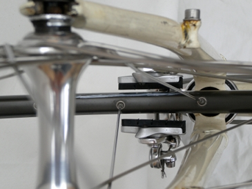
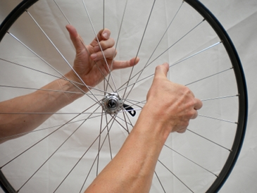
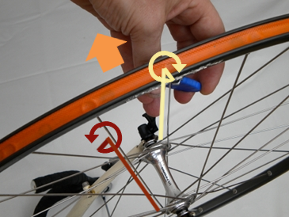

|
Straighten wheel |
 |
|
|
Summary
|
The key to straightening a wheel enough to keep you on the road is to:
- work gradually - make a small adjustment, and then check the result is a step in the right direction; and
- plan each adjustment
Leaping in with big adjustments might make things worse!
|
|
1. Is the problem really a warp?
|
Take a close look at your wheel and decide what kind of problem you have:
|
Problem
|
Action
|
|
a warp: a minor, side-to-side deflection of the rim. The rim appears to 'bulge to one side' as it rotates
|
you can fix. Mark the warped section of the rim with chalk, and read on.
|
|
the rim is deformed in another way e.g. the rim sides spread apart, or are squashed together;
hub not centred: the wheel goes up and down as it spins
|
contact a shop for advanced truing. You might need a new wheel.
|
|
the tyre is deformed
|
buy a new tyre.
|
|
drop outs do not hold the wheel securely
|
a new 'skewer', new wheel or new drop outs
|
|
|
|
|
You need to set up a truing stand to clearly see how straight or
warped your wheel is. A purpose-built truing stand is ideal but a new
one can cost more than a new wheel. The next best thing is to turn the
bike upside down. The bike is supported on its saddle and handle bars,
and the brake blocks provide reference points, or "marks", to indicate
the amount of side-to-side movement in the rim.
In the picture below, the section of rim that warps too close to the upper brake pad has been marked with white chalk.
|
|

Note: rim warps towards top mark
|
|
|
|
Buy kit?
Tools you need for this fix.
|
Ads. Selected by BikeFixer |
|
|
Buy Spoke Key
Comprehensive range of quality products
Worldwide delivery
www.wiggle.co.uk/Spoke Key
|
 |
|
3. Inspect wheel and replace broken spokes
|
Feel spoke tension: Work around the
wheel, and squeeze sets of spokes as if you were playing a harp.
Then a answer the following questions:
- Overall, do the spokes feel loose or tight?
- Is spoke tension constant, or do some spokes feel looser or tighter than others?
- Where are the loose or tight spokes in relation to the warp?
Warps often occur, because spokes have stretched or become loose over time, or because of accidents.
Replace any bent or broken spokes: Remove the tyre, inner tube and rim tape (see 'Fix puncture / flat tyre' page). On rear wheels, also remove the cassette (block of gears) (see 'Replace cassette' page).
Unscrew
the spoke nipple from the rim-end, and then pull out the spoke through
the the hub. Insert a new spoke and tighten the nipple so that the spoke
is just as tight as others in the wheel.
Use a spoke key to screw/unscrew nipples. Do not over-tighten, or you might induce new warping. |
|

Feel overall spoke tension
|
|
|
|
4. True the wheel: basic process
|
Find the warp: Rotate the wheel until the greatest
warp is adjacent to your marker. One side of the rim will be up against
the brake block, with a larger than usual gap on the other side.
Look at the spokes near the warp. Note that they are attached to different ends 'sides' of the hub
Pull the rim over: tighten on the side of the gap: Identify the 2 spokes nearest the point of maximum warp attached to the hub on the side of the gap. Tighten these spoke by turning the nipple 1/8 turn clockwise. This pulls the rim back towards the centre line of rotation.
Let the rim ease over: loosen on the side of the bulge: Then identify the 2 spokes nearest the point of maximum warp attached to the hub on the same side as the bulge. Loosen these spokes, turning the nipple 1/8 turn anti-clockwise. This allows the rim to ease back towards the centre line.
|
|

Tighten on the side of the gap, loosen on the side of the bulge
|
|
|
|
|
Spin to confirm a small improvement: Spin the wheel
and check you have straightened the rim by a small amount in the desired
direction. You adjust the rim by less than a single millimeter
each time you tighten and loosen opposing spokes, so you will probably
need to repeat this process several times, to slowly bring the wheel
back into true.
Note how, in the figure, the warped section of rim (marked in white)
no longer warps towards the upper brake pad as in the previous figure.
It is easy to get mixed up, and to tighten spokes that need loosening,
or turn nipples in the wrong direction. So take it slowly. |
 Rim straightened Rim straightened |
|
|
|
5. True the wheel: variations on basic process
|
The basic truing process assumes that, overall, the spokes in the
wheel are about tight enough. But overall, the spokes in your wheel
might be too tight or too loose.
|
Spoke Tension
|
Adaptation
|
|
overall, too tight
|
loosen 2 spokes on the side touching the brake block by ¼ turn. (No need to tighten any).
|
|
overall, too loose
|
tighten 2 spokes on the side of the gap by ¼ turn. (No need to loosen any)
|
|
|
|
About BikeFixer
BikeFixer is a co-op of bikers and web designers.
| "mc" grew up car-free in the countryside, and had to ride a bike
from an early age – absolute magic! In later life, he survived London
traffic and l’Etape du Tour. |
|
Sources
The books below are tremendously helpful, but there is a lot of material to get through.
- Ballantine, R. and Grant, R. 1994, Richards Bicycle Repair Manual. Dorling Kindersley
- Downs, T. 2005, Bicycle Maintenance & Repair
- Haynes 2007, The Bike Book - Complete Cycle Maintenance
- Park 2008, BBB-2 Big Blue Book of Bike Repair, Park Tools
- Van der Plas, R., 2007, Bicycle Repair. Repair and Maintenance of the Modern Bicycle
Sponsorship
Top10bikefixes is going for gold with Velo Club de Trabail - “Chapeau” to past, present and future members.
If they knew how to fix their bikes, they would not keep the rest of the team waiting around!
|
|